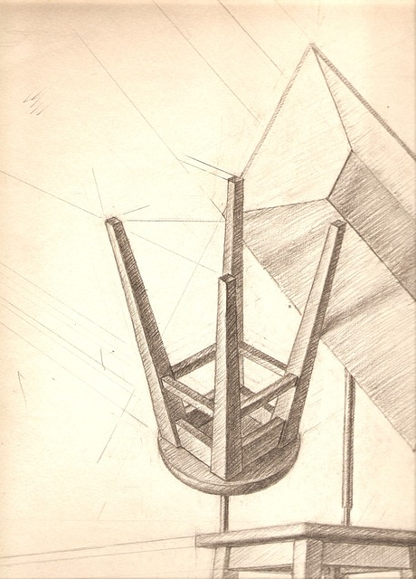
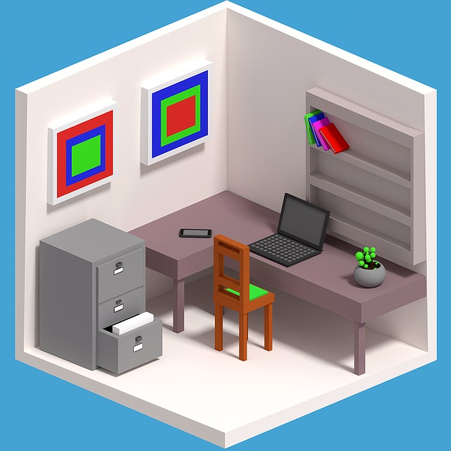
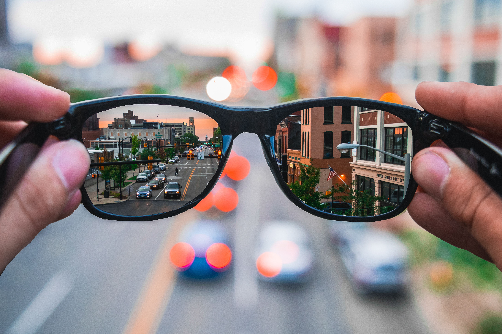

Interaction Design is an interdisciplinary field merging design
skills such as user experience, interface development, and graphic design with programming to create meaningful
experiences between the user, digital, and physical platforms. This ever-evolving field envisions new ways of
human-computer interaction within systems, services, products, and spaces across multiple industries.
We explore
We create
Skills
The IDD program gives students the chance to develop
the skills they'll use in the real world. Students will leave the program with knowledge of a variety of design
programs and coding languages.
We offer experience in
Showcase
The IDD program is home to future designers. See some
sample work and what students have to say about the program below.
Designers of the future
Pacifica Northwest
Year 1
I was interested in the interaction design program because I wanted
to gain experiences in different types of design. Now that I'm here, I know I made the right choice.
Tad Strange
Year 2
I'm excited to build on what I learned in my first year. I'm a
designer, Mom!
Wendy Corduroy
Year 3
I've really enjoyed my time the program. I'm looking forward to
graduation and to being able to use the skills I've gained here out in the real world to leave a positive
impact.
Student projects

Stan, Semester 1, Technical Drawing IFord, Semester 1, Visual DesignMabel, Semester 2, 3D Visualization I

Dipper, Semester 2, Technical Drawing II
Year End Show
Projects from IDD students at the School of Design's NEXT (2019) Year End Show, in collaboration with
ShowGBC.

Soos, AR glasses
Careers
The IDD program prepares students for a variety of careers, such as:
IDD taught me about how to design solutions, which helped me land a job.
Lance McClain, SEO specialist, Nexus Systems Group
What I've learned about UX in the IDD program has really helped me excel in my work in search engine
optimization, which depends on how users interact with applications.
Keith G., web developer, IBM
IDD gives you the chance to learn and practice a variety of coding languages, so now I get to use my skills
to create products that provide users with a great experience.